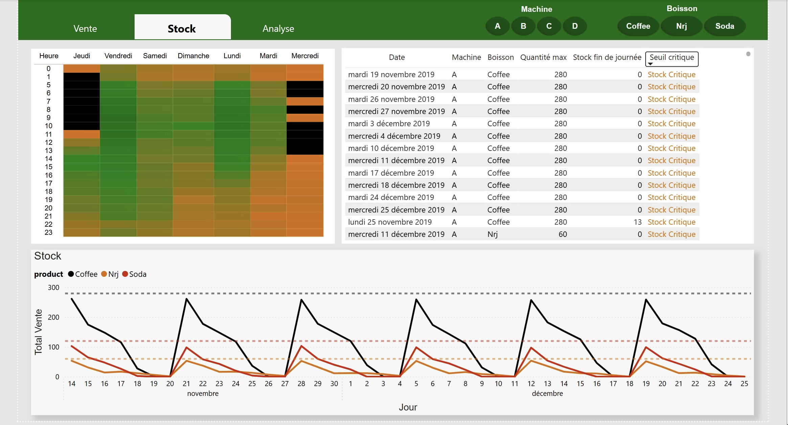
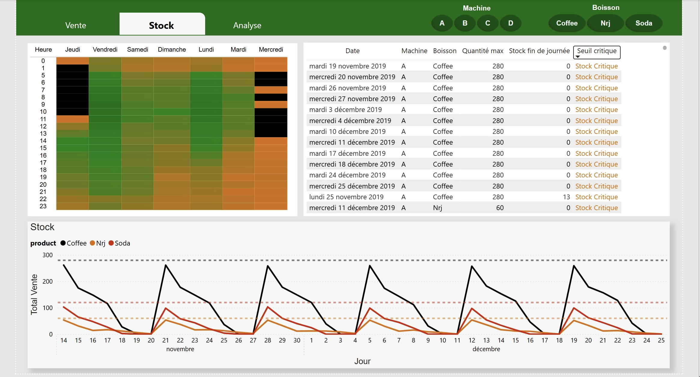

projects_data
Toys and Models – Analyse de données & reporting
Projet pour une entreprise B2B de miniatures de collection.
- Nettoyage & structuration d'une base client
- Requêtes SQL personnalisées
- Dashboard Power BI
- Recommandations business
- GitHub
- Nettoyage & structuration d'une base client
- Requêtes SQL personnalisées
- Dashboard Power BI
- Recommandations business
- GitHub
Creusix – Plateforme de recommandation de films
Application Streamlit + dashboard Power BI pour explorer les tendances du cinéma français.
- Moteur de recommandation personnalisé
- Dashboard analytique interactif
- Expérience utilisateur ludique
- GitHub

- Moteur de recommandation personnalisé
- Dashboard analytique interactif
- Expérience utilisateur ludique
- GitHub
Distributeurs automatiques – Analyse logistique
Étude sur les cycles de consommation et tournées de rechargement.
- Analyse stock & ventes
- Identification du stock critique
- Aide à la décision sur les tournées
- GitHub 
- Analyse stock & ventes
- Identification du stock critique
- Aide à la décision sur les tournées
- GitHub 
CAF – Prédiction des allocations petite enfance (en cours)
Travail en cours sur les données publiques de la CAF pour la petite enfance.
- Modèle Prophet pour prévision
- Visualisation temporelle & géographique
- Interprétation pédagogique des résultats
- Modèle Prophet pour prévision
- Visualisation temporelle & géographique
- Interprétation pédagogique des résultats